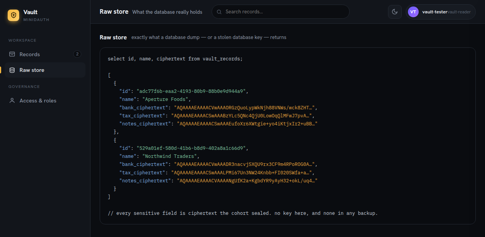
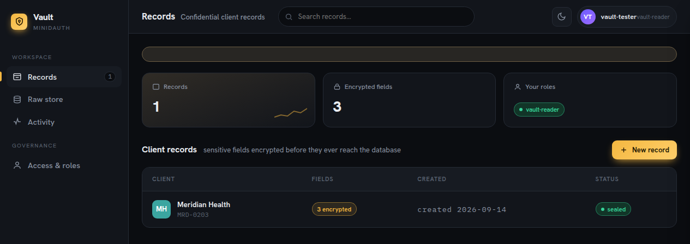

Give your existing login a key that nobody holds
minidauth is a small open source service you run next to your app. It takes the key that encrypts your users' data out of your servers.
The key is spread across a network of independent machines, so no single one of them, and not you either, ever holds the whole thing. When your app needs to read something it asks, and the network checks the rules and does the work, or refuses.
Docker image · MIT licensed · free tier on the live network
The problem it solves
Right now your app can read everything it stores. That is not a bug, it is how it is built: the data sits in your database and the key sits in your server, so whoever gets both gets everything. A stolen backup, a leaked environment file, a support session belonging to the wrong person. Nothing has to be broken for the data to walk out.
Encrypting the database does not fix it, because the thing that decrypts the database is standing right next to it. minidauth makes that key impossible to take, by making sure it never exists in one piece anywhere.
A stolen copy of your database contains nothing readable, and no key to make it readable.

How it works
-
Your users log in the way they already do
Cognito, Clerk, Supabase, Better Auth, Auth0, whatever you run today. No second password and no migration. You store one extra column against each user and add one callback route.
-
Your app asks instead of doing
To encrypt, decrypt or sign something, your app calls minidauth rather than reaching for a key. There is no key on the box to steal, and no way for your own code to decide it is allowed to read.
-
The network decides and does the work
Fourteen of twenty independent machines check the caller's role against a signed policy, then do the work together. The key is never put back together, not even in order to use it. If the request breaks the policy, they refuse.
Refusing is the part that encryption alone cannot do. A policy carries a contract, and that contract reads your payload before the machines will sign it, so one of these comes back signed and the other does not:
// signed by the cohort amount=250;to=alice // refused, by fourteen machines independently amount=5000;to=alice
The rules themselves are set by your own administrators, and never by one of them alone. A role is granted when several of them approve it, and the network signs it only then.

Projects it has been added to
Open source apps with their own logins, their own databases and no interest in changing either. Each name below is the fork, so you can read the whole change as a diff against upstream. The minidauth side is the same three steps in every one of them.
- Formbricks Run end to end
- The open source survey platform. Answers are sealed before they reach Postgres and opened only for a
response-readerrole a quorum granted. Take the role away and the same dashboard shows nothing readable, with no change to Formbricks' own login. - Twenty Run end to end
- The open source CRM. Contact fields are sealed record by record and a read takes a signed identity holding the role, so an unauthenticated call gets ciphertext and nothing else. The fork is the whole change, and Twenty's own login is untouched.
- WordPress Early
- A plugin that encrypts chosen post and user fields through minidauth, so a WordPress database backup stops being a copy of everything in it.
The examples cover five auth systems with the same integration file in each, and the repository will take a link to yours.
What changes in your code
- One column
- A
vuidon your user record, which the user cannot edit. It is how minidauth knows which person is being asked about. - One route
- A callback that finishes the Tide sign-in and hands you back that vuid. It is a drop-in in every example.
- One lookup
- Ask what roles someone holds on each request, instead of storing roles in your own tables.
// before: your database decides if (user.role === "admin") return decrypt(record); // after: the network decides, and can refuse const roles = await minidauth.rolesFor(user.vuid);
Where to use it
It earns its keep when the data you hold would be bad news in someone else's hands, and you cannot honestly say your server is the last line of defence. A small team holding health records, legal files or financial detail, with no security function behind it. A product where support has to help people without being able to read their records. Any admin panel that can see everything, given that the most common breach is not a clever exploit but a valid session belonging to somebody with too much access.
Not for you if the data is public anyway, if you need analytics over plaintext server side, or if you cannot tolerate a network hop on reads. Those are real costs and no amount of cryptography talks you out of them.
Blog
Taking the central authority out of your app
What moves off your server when a threshold of nodes holds the key, and what that changes about asking people to trust you.
The first policy is the only one that pack will ever sign
Two paid vendor keys went in the bin teaching us this.
What a stolen database looks like
Write a row, print the table, read the ciphertext. Then ask the network to sign something it should refuse.
Try it
Two commands, port 8081, no Java and no build
curl -O https://raw.githubusercontent.com/sashyo/minidauth/main/docker-compose.yml MC_ADMIN_TOKEN=$(openssl rand -hex 32) docker compose --profile public up
minidauth is MIT and free to run. The vendor key it manages needs a Tide licence, and the free tier is not limited for any of this: policy deployment, role grants and voucher decryption all work on it. Read Running minidauth before the first call rather than after, because the first policy on a key is permanent and there is no second attempt.